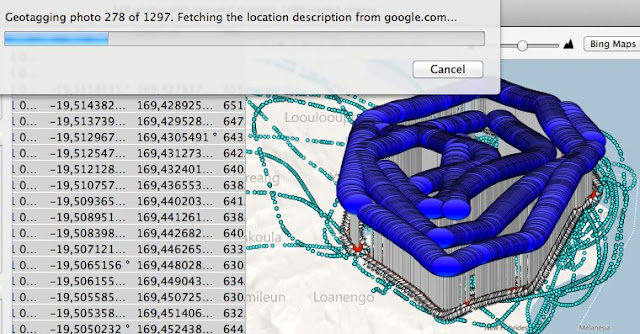
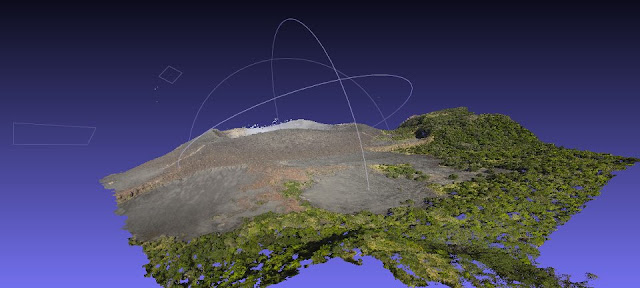
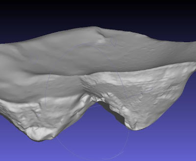

Ca y est, nous rentrons vers Port Vila, la capitale du Vanuatu, d'où nous trouverons des ordinateurs et de l'électricité suffisante pour débuter le travail de traitement numérique des photos.
1er travail : géoréférencer celles ci.

Le module automatisé du Nikon a à peu près fonctionné, en revanche, le GPS JOBO du Canon a été totalement hors-jeu...
Il nous faut donc utiliser les coordonnées enregistrées par le GPS de secours pour géolocaliser les photos, ce qui promet d'être long et fastidieux... sachant que nous avons 60 000 photos à traiter !!!

Et voici les premiers résultats préliminaires : un nuage de points (4 600 000 points tout de même), qui décrit la pente sud est du Yasur, dans la zone ou se trouvent les positions relevées avec précision par GPS cet été.
Et voici la première reconstitution sommaire de l'intérieur du cratère. Pour avoir une image plus précise il aurait fallu descendre au fond... Mais là on passe notre tour ;) Il ne s'agit que des premiers résultats, les ordinateurs vont continuer leurs calculs pour affiner les modèles.

Posts récents
Recent Posts